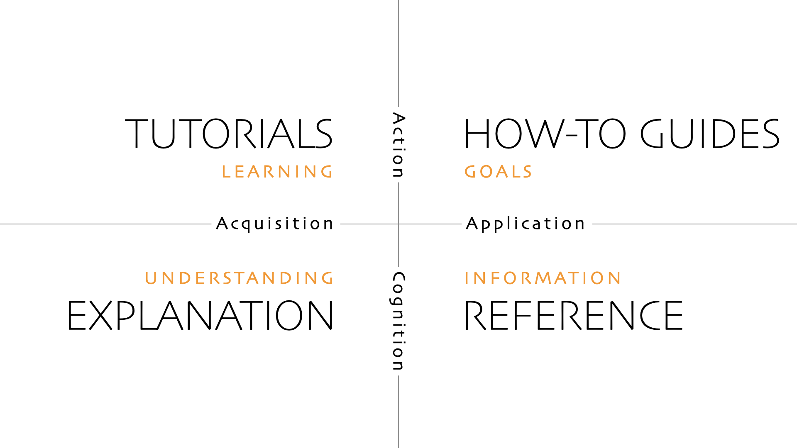

The compass¶

The Diátaxis map is an effective reminder of the different kinds of documentation and their relationship, and it accords well with intuitions about documentation.
However intuition is not always to be relied upon. Often when working with documentation, an author is faced with the question: what form of documentation is this? or what form of documentation is needed here? - and no obvious, intuitive answer.
Worse, sometimes intuition provides an immediate answer that is also wrong.
A map is most powerful in unfamiliar territory when we also have a compass to guide us.
The Diátaxis compass is something like a truth-table or decision-tree of documentation. It reduces a more complex, two-dimensional problem to its simpler parts, and provides the author with a course-correction tool.
If the content… |
…and serves the user’s… |
…then it must belong to… |
|---|---|---|
informs action |
acquisition of skill |
a tutorial |
informs action |
application of skill |
a how-to guide |
informs cognition |
application of skill |
reference |
informs cognition |
acquisition of skill |
explanation |
The compass can be applied equally to user situations that need documentation, or to documentation itself that perhaps needs to be moved or improved. Like many good tools, it’s surprisingly banal.
To use the compass, just two questions need to be asked: action or cognition? acquisition or application?
And it yields the answer.
Using the compass¶
The compass is particularly effective when you think that you (or even the documentation in front of you) are doing one thing - but you are troubled by a sense of doubt, or by some difficulty in the work. The compass forces you to stop and reconsider.
Especially when you are trying to find your initial bearings, use the compass’s terms flexibly; don’t get fixated on the exact names.
action: practical steps, doing
cognition: theoretical or propositional knowledge, thinking
acquisition: study
application: work
And the questions themselves can also be used in different ways:
Do I think I am writing for x or y?
Is this writing in front of me engaged in x or y?
Does the user need x or y?
Do I want to x or y?
And try applying them close-up, at the level of sentences and words, or from a wider perspective, considering an entire document.